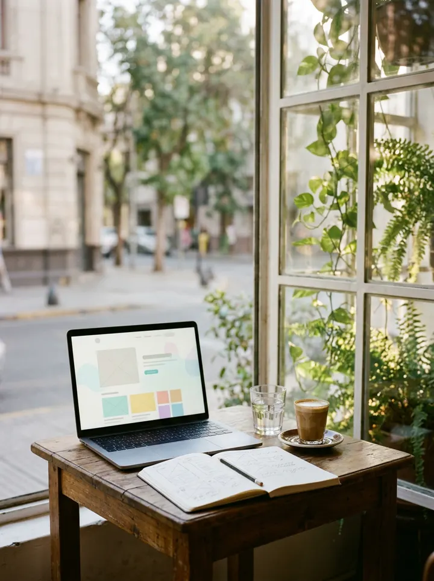
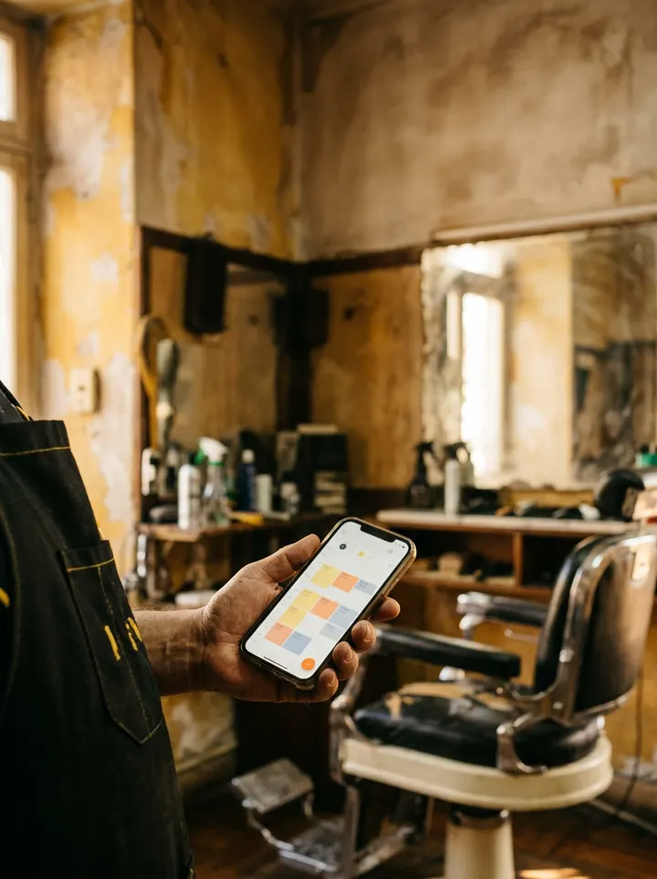
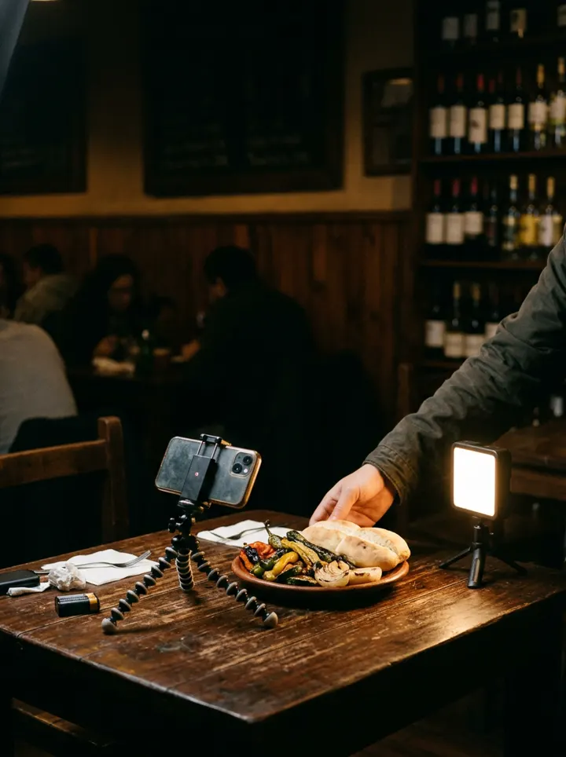
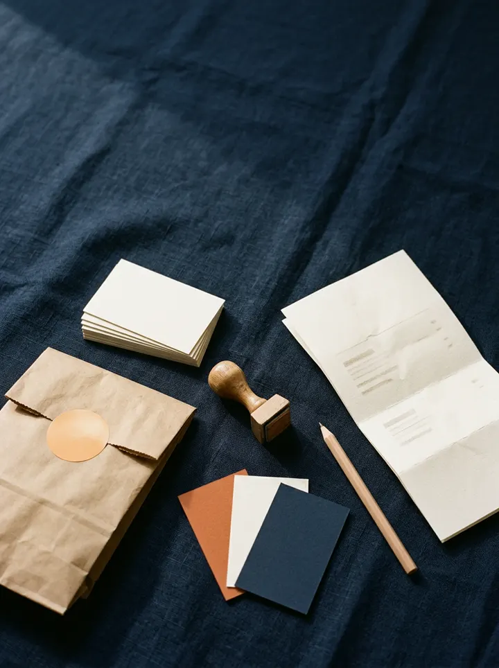
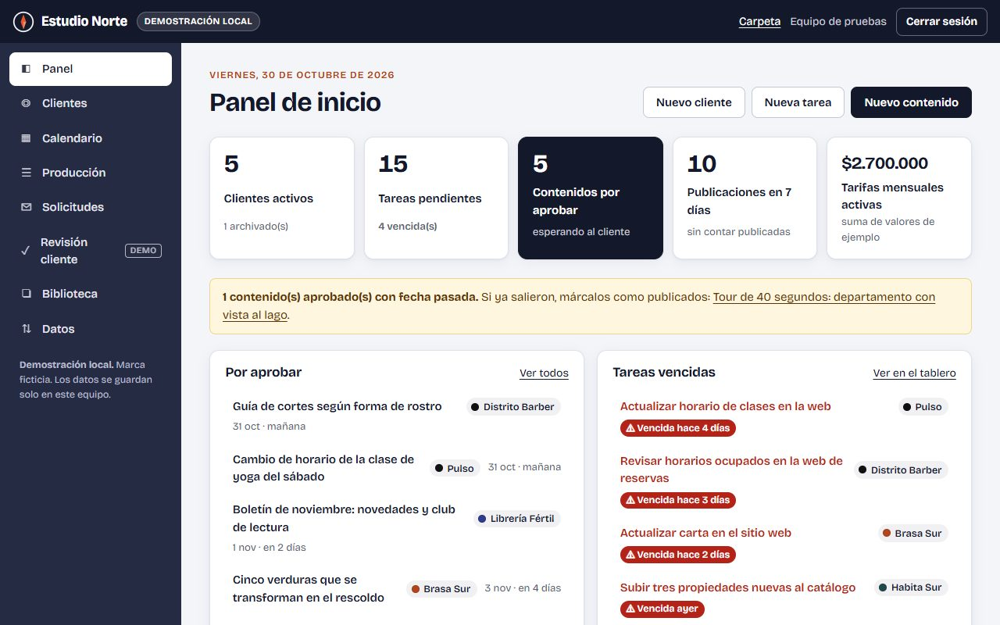
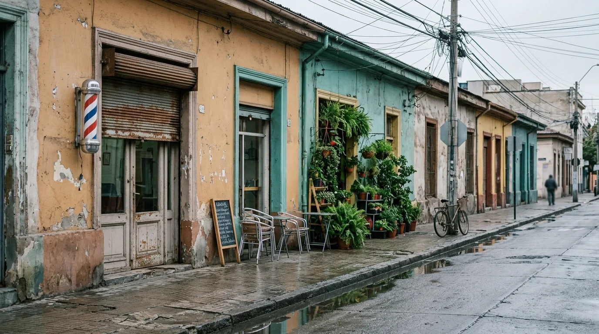

Qué hacemos
Cuatro cosas, bien hechas, para que tu negocio se vea, se encuentre y se ordene.
-

Webs que trabajan
Landing, sitio institucional o tienda: rápidas, claras y fáciles de editar.
Ver un ejemplo -

Reservas y catálogos
Que te agenden, consulten o elijan sin mandarte un mensaje a medianoche.
Ver un ejemplo -

Contenido para redes
Calendario mensual, fotos y videos cortos en tu local, textos con tu tono.
Cómo lo organizamos -

Identidad visual
Logo, paleta y plantillas para que tu marca se reconozca de lejos.
Ver un ejemplo
Cinco negocios, cinco personalidades
Cada sitio tiene su propia composición, tipografía, paleta, ilustraciones y tono. Ninguno es una plantilla con otro nombre: ábrelos y prueba sus formularios, filtros y reservas.
-
Restaurante · Barrio Italia
Brasa Sur
Editorial y cálido, con la comida como protagonista: fondo carbón, tipografía con serifas y platos ilustrados.
Abrir Brasa Sur -
Barbería · Santiago Centro
Distrito Barber
Urbano y tipográfico: negro, amarillo señalética y titulares condensados que se leen desde la vereda.
Abrir Distrito Barber -
Inmobiliaria · Puerto Varas
Habita Sur
Sobrio y luminoso, con la calma del sur: verde laguna, mucho aire y fichas que se leen sin apuro.
Abrir Habita Sur -
Gimnasio · Ñuñoa
Pulso
Energético y legible: lima sobre negro, movimiento en las ilustraciones y horarios que se encuentran rápido.
Abrir Pulso -
Agencia de muestra · Santiago
Estudio Norte
Una agencia de muestra: servicios, proceso de trabajo, un brief por pasos y un asistente de admisión que funciona sin IA externa.
Abrir Estudio Norte
La app de gestión
La usamos por dentro para administrar clientes y producir contenido: calendario editorial, producción, aprobaciones y biblioteca, todo en un solo lugar. Si la quieres para tu equipo, pídela en «Contrátanos».
- Panel de inicioClientes, tareas, aprobaciones y vencimientos, calculados.
- SolicitudesLo que llega desde «Contrátanos», listo para convertir en cliente.
- ClientesContacto, servicios, colores, tono y público.
- Calendario editorialMes o lista, filtros y exportación a CSV.
- ProducciónTablero con arrastrar y soltar o selector accesible.
- Revisión del clienteComentar, aprobar o pedir cambios (demostración).
- BibliotecaIdeas, referencias y archivos por cliente.
- DatosCopia de seguridad, importación validada y contraseña.

Míranos en Instagram y TikTok.
Publicamos ideas cortas para negocios de barrio: cómo ordenar las reservas, qué poner en tu web y cómo planificar tus redes sin apuro.
¿Tu negocio se parece a alguno de estos?
Cuéntanos qué necesitas y te respondemos con una propuesta por escrito: alcance, plazos y precio. También puedes escribirnos directo por Instagram.
